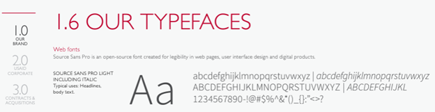
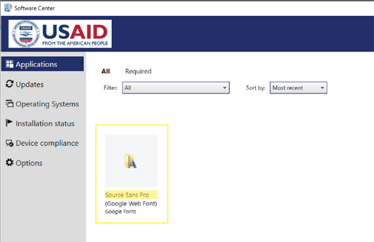
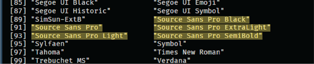

5 Installing Source Sans Pro Typeface
5.1 Installing Source Sans Pro
To create standard visualizations across our SI team, we rely on one of USAID’s alternate fonts, Sans Source Pro. This typeface is not only not native to R, nor is it a standard to Windows, but is an open source typeface available from Google Fonts.

To install the font on your GFE, you can find it in Software Center (Start > Microsoft Endpoint manager > Software Center). Once there, you can select the Application called “Source Sans Pro” and click “Install”.

To install it on your computer, navigate to the typeface on Google Fonts and click the “Download family”. After the folder finishes downloading, unzip it.
5.2 Accessing Fonts in R
To use non-native fonts in R, you must run a program called extrafonts. You will need to run the following code below to install all the fonts on your computer (if desired) and the one you just downloaded/added. You will only need to import fonts only once on your machine. However, to use these fonts with any plotting in R, you will need to load the extrafont as with any other package.
#load library (install if these are not already installed)
library(extrafont) #install.packages("extrafont")
library(remotes) #install.packages("remotes")
#downgrade a package dependency for extrafont
#https://stackoverflow.com/questions/61204259/how-can-i-resolve-the-no-font-name-issue-when-importing-fonts-into-r-using-ext/68642855#68642855
install_version("Rttf2pt1", version = "1.3.8")
#import all Windows fonts
font_import()
#restart your R session - CTRL + SHIFT + F10
#check that your fonts are now accessible in R
library(extrafont)
fonts()